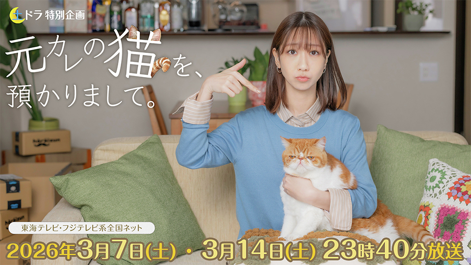

Motokare no Neko wo, Azukarimashite (2026)
元カレの猫を、預かりまして

Karya ini diadaptasi dari novel berjudul sama karya Ishida Shou. Tokoh utamanya adalah Shibata Masaki, seorang wanita karier ambisius yang sibuk bekerja sebagai kepala bagian di divisi penjualan. Di tempat kerja, meskipun ia disukai oleh junior tampan bernama Yashiro Atsushi, Masaki tidak berani melangkah lebih jauh karena alasan usia dan posisinya.
Suatu hari, mantan pacarnya yang telah berpisah dengannya 3 tahun lalu tiba-tiba datang dan menitipkan seekor kucing misterius bernama Yomichi dengan pesan, “Tolong rawat selama 2 bulan saja.” Kucing ini memiliki penampilan “agak jelek” dengan usia yang tidak jelas.
Ternyata, Yomichi adalah kucing yang bisa berbicara, ia dapat merasakan emosi manusia melalui bau, dan sering menyinggung inti perasaan Masaki tentang percintaan dengan logat Kansai. Didorong oleh Yomichi, Masaki perlahan mulai mendekatkan diri dengan Yashiro. Seiring waktu, alasan sebenarnya mengapa mantan pacarnya menitipkan kucing tersebut juga mulai terungkap.